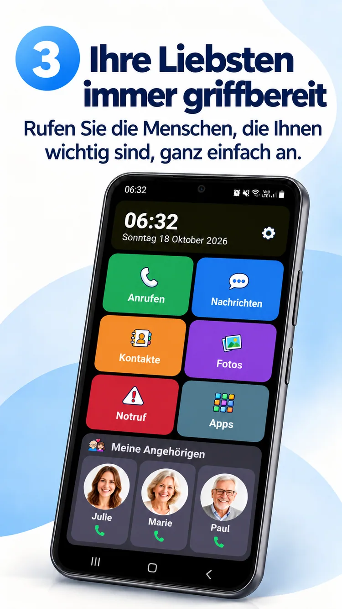
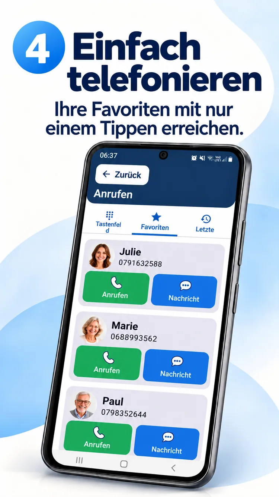
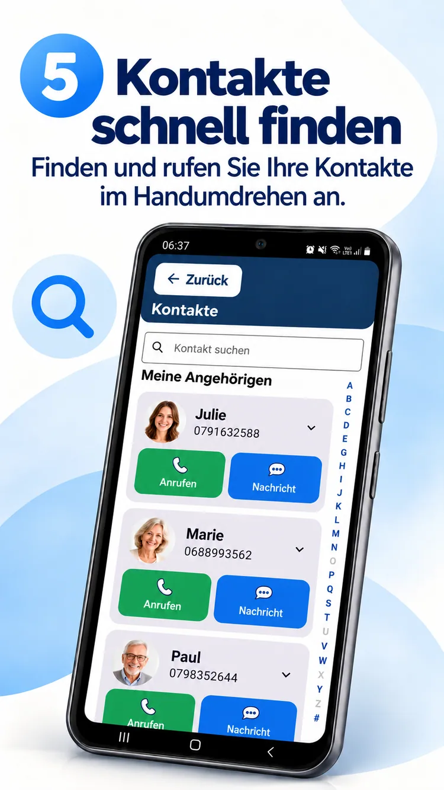
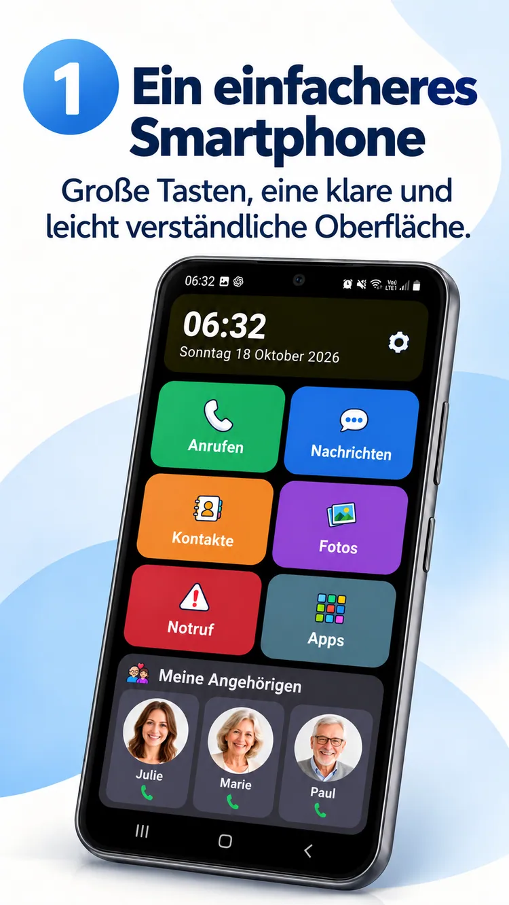

01
Ein Foto. Ein Anruf.
Ihre Liebsten in Reichweite.


Ein übersichtlicher Android-Startbildschirm, Ihre Liebsten immer griffbereit und mehr Freiraum für das Wesentliche.
ClikoSpido gestaltet den Startbildschirm kompatibler Android-Smartphones übersichtlich, vertraut und anpassbar. Weniger Unsicherheit, mehr Selbstständigkeit.
Große Bedienelemente, hilfreiche Funktionen und Platz für das Wesentliche.

Anrufe, Nachrichten, Kontakte, Fotos, Kamera und Notfall-Kurzwahl sind schnell erreichbar.
Werbegrafik zur Illustration; die installierte Oberfläche kann abweichen.
Ihre Liebsten in Reichweite.

Großes Tastenfeld und lesbare Bedienelemente.

Kontaktfotos und alphabetische Suche.

Angehörige können die Anzeige anpassen, erlaubte Apps auswählen und bestimmte Einstellungen mit einer PIN schützen.
Entdecken Sie acht offizielle Werbegrafiken auf Deutsch.

Lernen Sie ClikoSpido im kurzen Video mit deutschen Texten kennen.
Video abspielenKlare Antworten vor dem Start.
Ja, auf kompatiblen Android-Smartphones als auswählbarer Standard-Launcher.
Nein. Ein vorhandenes kompatibles Android-Gerät kann vereinfacht werden.
Nein. Die Schaltfläche Nachrichten öffnet Ihre vorhandene Nachrichten-App.
Nein. Sie kann einen hinterlegten Kontakt anrufen, ersetzt aber keinen Notrufdienst.
Eine Oberfläche, die alltägliche Schritte leichter macht.
Zurück nach oben